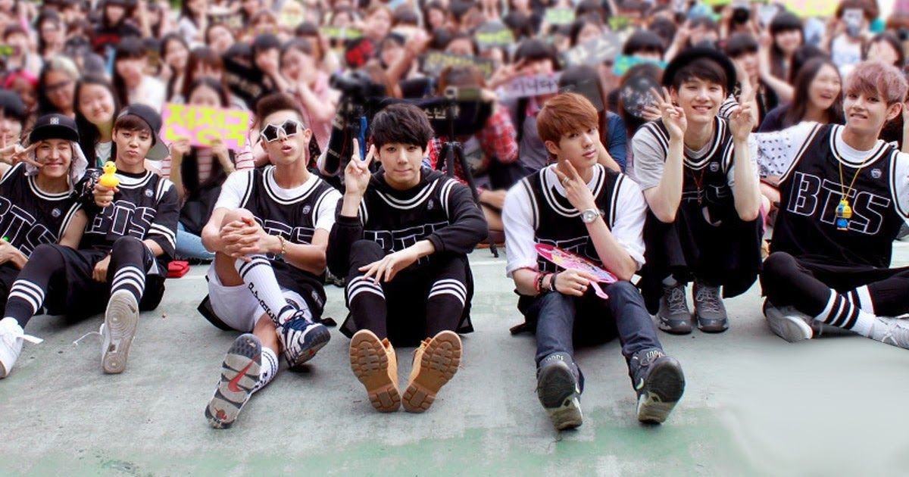

|
 |
 |
 |
| Bantang Seondan mas conocido como BTS debuto el 13 de julio del 2013 desde entonces el grupo ha publicado dos álbumes de estudio, cuatro EPs, un sencillo y un álbum recopilatorio en Corea del Sur. Además, han publicado dos álbumes de estudio, siete sencillos y un álbum recopilatorio en Japón. Han llevado a cabo cinco giras como artistas en solitario: dos gira mundiales, dos en Asia y una en Japón, atrayendo a más de 600 000 espectadores y actuando en Asia, Oceanía, Norteamérica y Sudamérica. También han participado en festivales internacionales como Summer Sonic en 2015 y KCON en su edición en Los Ángeles en 2014 y en las ediciones de Abu Dhabi, París, Nueva York y Los Ángeles en 2016. |
Miembros |
|
kim Nam-joon |
|
Mejor conocido por su nombre artístico RM, es un rapero, bailarín, compositor, productor y modelo surcoreano. Desde 2013, es el líder y rapero principal de la banda BTS. Actualmente posee dos mixtapes, el primero publicado en 2015 bajo el nombre de "RM", el segundo lanzado en 2018 llamado "Mono". Nombre real: (김남준) Kim Nam-joon. Fecha de nacimiento: 12 de septiembre de 1994 (26 años) Lugar de nacimiento: Ilsan, Gyeonggi-Do, Corea del Sur. Estatura: 1.81m. Apodos: RM, Namjoonnie, Nammie, GodDestruction, Monnie. Signo zodiacal: Virgo. Signo zodiacal chino: Perro. Hobbies: Visitar Museos, escuchar música, componer. Color favorito: Negro, blanco y morado. |
|
Kim Seok-jin |
|
Más conocido por su nombre artístico Jin, es un cantante, modelo, compositor, bailarín, MC surcoreano. Pertenece al grupo BTS, donde ocupa el puesto de vocalista, bailarín y visual, desde 2013. Nombre real: (김석진) Kim Seokjin. Fecha de nacimiento: 4 de Diciembre de 1992 (28 años) Lugar de nacimiento: Anyang-Gwangcheon, Corea del Sur. Estatura: 1.79m. Apodos: GodJin, Jinnie, worldwide handsome, Seokjinnie. Signo zodiacal: Sagitario. Signo zodiacal chino: Mono Hobbies: Cocinar, comer, jugar Nintendo, leer mangas y ver series anime. Color favorito: Rosa |
|
Min Yoon-gi |
|
Más conocido por sus nombres artísticos Suga y/o Agust D, es un rapero, modelo, compositor, productor y bailarín surcoreano. Debutó en el grupo BTS en 2013 bajo la compañía BigHit Entertainment. Actualmente posee dos mixtapes bajo el nombre artístico de Agust D, el primero lanzado en 2016 llamado "Agust D", y el segundo en 2020 bajo el nombre "D-2". Nombre real: (민윤기) Min Yoongi. Fecha de nacimiento:9 de Marzo de 1993 (27 años) Lugar de nacimiento: Buk-Gu, Daegu, Corea del Sur. Estatura:1.74m. Apodos:Mr. Swag, Agust D, DBoy, Lil meow meow, Min suga, Gigi, Suguita, Gatito, Yoonnie. Signo zodiacal: Piscis Signo zodiacal chino: Gallo Hobbies: Baloncesto, fotografía, dormir, componer y producir. Color favorito: Blanco |
|
Jung Ho-seok |
|
Mejor conocido por su nombre artístico J-Hope, es un bailarín, coreógrafo, rapero, cantante, MC, compositor, modelo y productor surcoreano. El 2 de Marzo de 2018 fue lanzado su primer mixtape llamado "Hope World". Nombre real: (정호석) Jung Hoseok. Fecha de nacimiento:18 de febrero de 1994 (27 años) Lugar de nacimiento: Gwangju, Corea del Sur. Estatura:1.77 Apodos:Hobi, Hope, J-Hope, Golden Hyung, Hoba. Signo zodiacal: Acuario. Signo zodiacal chino: Perro. Hobbies: Bailar, rapear y vitrinear ropa. Color favorito:Verde |
|
Park Ji-min |
|
Más conocido por su nombre artístico Jimin, es un cantante, bailarín, coreógrafo, modelo y MC surcoreano. Nombre real:(박지민) Park Jimin. Fecha de nacimiento:13 de Octubre de 1995 (25 años) Lugar de nacimiento: Geumjeong-gu, Busan, Corea del Sur. Estatura:1.74m. Apodos: Chim chim, Jiminnie, Little Prince, Mochi, MinMin, Jimin-ssi, Mimi. Signo zodiacal: Libra Signo zodiacal chino: Cerdo Hobbies: Dibujar, bailar, artes marciales. Color favorito: Negro, azul y naranja. |
|
Kim Tae-hyung |
|
Más conocido por su nombre artístico V, es un cantante, modelo, actor, bailarín, fotógrafo, MC y compositor surcoreano. Es miembro del grupo BTS, bajo la compañía BigHit Entertainment. Nombre real:(김태형) Kim Taehyung Fecha de nacimiento:30 de Diciembre de 1995 (25 años) Lugar de nacimiento: Seo-gu, Daegu, Corea del Sur. Estatura:1.78m. Apodos:TaeTae, Taehyungie, bear baby, Tete, Osito. Signo zodiacal: Capricornio Signo zodiacal chino: Cerdo Hobbies: Pintar, fotografía análoga, jugar videojuegos, escuchar jazz. Color favorito:Negro, verde y blanco. |
|
Jeon Jungkook |
|
Mejor conocido por su nombre artístico Jungkook, es un cantante, bailarín, rapero, compositor, productor y modelo surcoreano. Desde 2013, es miembro, vocalista principal y maknae de la banda BTS, en la agencia de Big Hit Entertainment. Nombre real:(전정국) Jeon Jungkook. Fecha de nacimiento:1 de Septiembre de 1997 (23 años Lugar de nacimiento: Mandeok-dong, Busan, Corea del Sur. Estatura:1.78m. Apodos: JK, Jungkookie, Kookie, Golden Maknae, Kook, Koo. Signo zodiacal: Virgo Signo zodiacal chino: Buey Hobbies:Dibujar, bailar, la fotografía, boxeo, editar videos (pueden buscar "G.C.F" en youtube). Color favorito:Negro, rojo, blanco. |
Historia Pre-debut |
|
Rap Monster fue el primer miembro reclutado de BTS.Según Bang Sihyuk, al escucharle rapear firmó un contrato con él inmediatamente. El segundo miembro fue Suga, tras quedar segundo en las audiciones Hit It de 2010. J-Hope entró como aprendiz en Big Hit el 24 de diciembre de 2010, después llegaron Jin, Jungkook (el 24 de abril de 2011 después de ser eliminado en las audiciones Superstar K3), V y Jimin. En 2011 los raperos del grupo crearon la canción «Paldogangsan» para promocionar las audiciones Hit It de ese año. Ya que las audiciones se celebraban a nivel nacional decidieron utilizar sus dialectos locales en la canción. En 2013 el grupo incluyó el tema en el álbum O!RUL8,2? y lo promocionaron en programas de música. En 2012 algunos de los integrantes del grupo aparecieron en el vídeo musical «I'm Da One» de Jo Kwon del grupo 2AM, que en aquel momento formaba parte de Big Hit.J-Hope y Jungkook participaron como bailarines en el vídeo y durante la promoción de la canción en programas de música. Además, J-Hope participó también como rapero en el tema «Animal» del mismo álbum, actuando junto a Jo Kwon en sus apariciones televisivas.El canal de Youtube del grupo, BANGTANTV, se creó el 16 de diciembre de 2012 y el blog el 21 de diciembre. Fue entonces cuando empezaron a publicar algunas de las canciones en las que habían estado trabajando durante su aprendizaje, «Rap Monster» de Rap Monster y «All I Do Is Win» de Suga se publicaron el 22 de diciembre en la cuenta de Soundcloud y en los siguientes meses aparecieron «School Of Tears» y «Graduation». Utilizaron también el canal de Youtube para publicar otro tipo de contenido como vlogs, análisis de equipo musical o prácticas de canto y baile. cuenta personal de Twitter del grupo se creó el 13 de julio de 2011, pero no se empezó a utilizar hasta el 17 de diciembre de 2012. El 21 de mayo de 2013 el blog que el grupo había estado utilizando hasta ese momento se cerró y se anunció la creación de la página web oficial (bts.ibighit.com), donde apareció una cuenta atrás que acababa el 27 de mayo. Ese día se publicó el tráiler de debut del grupo y apareció una nueva cuenta atrás que terminaba el día 3 de junio, cuando aparecieron fotos e información sobre el primer miembro, V, que había sido mantenido en secreto hasta ese momento. Además se anunció que el single debut 2 Cool 4 Skool se lanzaría el 12 de junio, cuando se llevaría a cabo la presentación oficial del grupo. |
2013-2014: Trilogía de la escuela y Dark & Wild |
|  |
| BTS en un fan meeting en Music Bank el 26 de julio de 2013. El 12 de junio de 2013 se publicó el primer sencillo del grupo, 2 Cool 4 Skool, con el que promocionaron los temas No More Dream y We Are Bulletproof Pt.2. Su primera actuación se produjo el 13 de junio en el programa M! Countdown en el que se considera su debut oficial. En septiembre llegaría el primer mini álbum, O!RUL8,2?, que tuvo como título principal la canción N.O. Además, el 3 de septiembre comenzó la emisión en SBS MTV del primer reality de la banda, Rookie King. A finales de año llegaría su primer premio como "Mejor Nuevo Artista del Año" en la quinta edición de los Melon Music Awards. A este premio se sumarían otros en los Golden Disk Awards,Seoul Music Awards o Gaon Chart K-Pop Awards. En noviembre realizaron su primera actuación fuera de Corea del Sur, en el 7 See Concert en Tailandia. El 8 de diciembre tuvo lugar el First Japan Showcase en Tokio, su primer concierto en Japón, para el que se añadieron más fechas en enero en Tokio y Osaka y al que acudieron 6 500 personas. El mismo día 8 de diciembre, Suga acudió al hospital en Japón por un dolor de estómago, regresó a Corea de urgencia y al día siguiente fue operado de apendicitis. El 12 de febrero de 2014 salió al mercado el segundo mini álbum, Skool Luv Affair, que finalizaría la trilogía sobre la escuela del grupo. El sencillo «Boy In Luv» fue la primera canción nominada a número uno en un programa de música de la banda. El 13 de mayo se emitió en Mnet un capítulo del programa 4 Things Show dedicado a Rap Monster y su carrera como ídolo y rapero. El 13 de junio de 2014 acudieron al Moscow Korean Culture Festival, creado por las organizaciones de turismo de Rusia y Corea del Sur y fueron los únicos artistas coreanos invitados por Rusia. El 4 de junio se publicó el primer sencillo del grupo en Japón, No More Dream (Japanese Ver.), que entró en el número 6 en la lista Oricon Daily Chart y en el número cuatro en Billboard Japón Top Single Sales. Se vendieron más de 32 000 unidades en su primera semana en el mercado. A finales de junio de 2014 la banda viajó a Estados Unidos con el propósito de grabar su nuevo álbum de estudio. Además, durante su estancia grabaron su segundo reality, American Hustle Life, que seguía a los miembros mientras aprendían sobre la cultura del hip-hop. El reality comenzó a emitirse en julio en la cadena Mnet. El 16 de julio salió a la venta el sengundo sencillo japonés, Boy In Luv (Japanese Ver.). Continuaron el verano con actuaciones en Alemania, Suecia y Brasil, en la que sería su primera visita a Europa y Sudamérica. El 10 de agosto el grupo participó en KCON en Los Ángeles, la primera a la que fueron invitados. El 19 de agosto se publicó su primer álbum de estudio, Dark & Wild, con el que promocionaron los temas «Danger» y «War Of Hormone». El primer concierto en solitario de la banda tuvo lugar el 17, 18 y 19 de octubre de 2014 en Seúl, que dio inicio al tour BTS Live Trilogy Episode II: The Red Bullet. La primera parte de la gira les llevó por países asiáticos como Japón, Filipinas o Tailandia. |
En octubre participaron en el programa especial de Music Bank realizado en la Arena de Ciudad de México. En noviembre fueron nominados a los MTV Europe Music Awards como Mejor Artista Coreano. El 3 de diciembre fueron invitados a actuar en la alfombra roja de los Mnet Asian Music Awards, así como en la misma gala de premios en colaboración con Block B. El 24 de diciembre salió al mercado Wake Up, primer álbum completo de la banda en Japón con el que consiguieron el número tres en la lista Oricon japonesa y en el dos de Billboard Japón y del que se vendieron 2 715 copias en las primeras veinticuatro horas. |
2015-2016: The Most Beautiful Moment in Life |
El 15 de enero de 2015 el grupo ganó su primer premio bonsang por el álbum Dark & Wild en los Golden Disk Awards. El segundo llegaría unos días después en los Seoul Music Awards. Ese mismo mes ganaron además el premio "World Rookie Award" en los Gaon Chart K-Pop Awards y dos premios en los Japan Gold Disc Awards. |
En febrero se llevó a cabo el primer tour japonés del grupo, First Japanese Tour Wake Up: Open Your Eyes que se celebró en Tokio, Osaka, Nagoya y Fukuoka y para el que se vendieron 25 000 entradas. En marzo tuvo lugar el segundo concierto del grupo en Corea, BTS Live Episode I: BTS Begins, celebrado los días 28 y 29 y con 6 500 entradas vendidas. El 29 de abril de 2015 se publicó el mini álbum The Most Beautiful Moment in Life, Part 1. El álbum vendió más de 70 000 copias en los primeros días y entró en la lista Billboard World Albums en el número dos. El 7 de mayo el grupo consiguió su primera victoria en un programa de música en The Show con «I Need U», el título principal del disco, con la que ganaron un total de cinco premios. El vídeo musical de la canción además consiguió un millón de visitas en Youtube en dieciséis horas. El 17 de junio se publicó el cuarto sencillo japonés, For You, el primero original para el país nipón, que entró como número uno en la lista Oricon Daily Chart vendiendo 70 000 copias en su primer día en el mercado.Ese mismo mes comenzó la segunda parte del tour BTS Live Episode II. The Red Bullet, que tuvo paradas en Taiwán, Australia o Estados Unidos y finalizó el 29 de agosto en Hong Kong, atrayendo a un total de 80 000 espectadores. Durante el verano también realizaron una gira de fan meetings por Japón a la que acudieron 18 000 fanes y en agosto participaron en el festival Summer Sonic, actuando el 15 de agosto en Osaka y el 16 en Tokio. En septiembre llevaron a cabo el tour Highlight por Norteamérica en colaboración con la firma de ropa Community 54. El 8 de septiembre se publicó el vídeo The Most Beautiful Moment In Life On Stage: Epilogue como adelanto a la gira que se llevaría a cabo a finales de año en Corea del Sur y Japón para promocionar el álbum The Most Beautiful Moment in Life, Part 2, que se lanzó el 30 de noviembre. El disco entró en el número 171 en la lista Billboard 200 y en el uno en Billboard World Albums. Además, el álbum consiguió el número uno en la lista Gaon Album Chart de noviembre por vender más de 140 000 unidades en sus primeros días en el mercado. Por otro lado, el sencillo promocional «Run» ganó cinco premios en programas de música.En octubre ganaron el premio a "Mejor Artista de Corea del Sur" en los MTV Europe Music Awards, el 7 de noviembre recibieron el premio "Best Male Dance" en los Melon Music Awardsy el 2 de diciembre el premio "Best World Performer" en los Mnet Asian Music Awards. BTS en KCON France 2016 en París el 2 de junio de 2016. El 8 de diciembre el grupo publicó su quinto sencillo japonés, I Need U (Japanese Ver.), del que se vendieron más de 70 000 copias la primera semana y entró en el número cinco en la lista Oricon y en el dos en Billboard Japón. El 15 de marzo de 2016 se publicó el sexto sencillo japonés, RUN (Japanese Ver.), que vendió 53 000 copias en el primer día en el mercado y entró en el número seis de la lista Oricon del mes de marzo y en el número dos de la lista de sencillos de Billboard Japón. Además el grupo participó en KCON Abu Dhabi el 25 de marzo, marcando su primera actuación en Oriente Próximo. El 2 de mayo se lanzó el álbum The Most Beautiful Moment in Life: Young Forever, una recopilación de las dos entregas anteriores además de remixes y tres nuevas canciones. El grupo promocionó el single «Fire», por el que ganaron tres premios en programas de música. Además, el vídeo musical de la canción consiguió diez millones de visitas en Youtube en 75 horas. El disco entró en el Billboard 200 en el número 107, además de en el dos en el World Albums Chart, y dominaron la lista de World Digital Songs con «Fire», «Save Me» y «Epilogue: Young Forever» en los tres primeros puestos, cosa que no había conseguido ningún artista surcoreano.Por otro lado, Gaon Chart declaró que el disco había sido el más vendido del mes de mayo en Corea del Sur con 310 243 copias vendidas. |
 |
El 7 y 8 de mayo, dio comienzo en Seúl la gira de promoción del álbum The Most Beautiful Moment in Life On Stage: Epilogue. Las 24 000 entradas puestas a la venta para los dos conciertos de Seúl se agotaron en segundos. El tour continuó durante el verano con paradas en Taiwán, China, Japón, Filipinas y Tailandia reuniendo a un total de 144 000 espectadores en diez ciudades. Ese verano participaron en tres ediciones de KCON; el 2 de junio en KCON France, la primera celebrada en Europa; el 25 de junio en KCON Nueva York[76] y el 31 de julio en KCON Los Ángeles. El 29 de agosto actuaron delante de 55 000 personas en el festival A-Nation, el de mayor tamaño que se celebra en Japón. El 7 de septiembre de 2016 se lanzó su segundo álbum japonés, Youth, que consiguió el número uno en la lista Oricon Weekly Album Chart vendiendo más de 76 000 copias la primera semana. |
2016-2017: Wings |
El 5 de septiembre a las 00:00 (KST) se publicó el corto Wings Short Film #1 BEGIN, el primero de siete que sirvieron como adelanto del segundo álbum de estudio del grupo, Wings, que se publicó el 10 de octubre. El álbum consiguió entrar en el Billboard 200 en el número veintiséis y se convirtió en el álbum coreano mejor posicionado en la lista, el único en entrar en la lista dos semanas y el álbum coreano con mejores ventas en una semana con 16 000 unidades y casi 22 000 en total. De este modo, el grupo se convirtió en el primer artista surcoreano en entrar con tres álbumes en el Billboard 200 y pasar cuatro semanas en la lista. Wings fue también el primer álbum surcoreano en entrar en el UK Album Chart, posicionándose en el número 62, y el grupo batió su propio récord al entrar en el Billboard Canadian Albums en el número diecinueve, siendo hasta la fecha los únicos artistas surcoreanos en entrar en la lista. El vídeo del sencillo «Blood Sweat & Tears» batió el récord del vídeo que tardó menos en conseguir diez millones de visitas de un grupo k-pop masculino y el tema consiguió ganar seis premios en programas de música. |
El grupo recibió el 27 de octubre de 2016 la Mención del Ministro de Cultura en los 2016 Korea Pop Culture and Arts Awards por su labor de difusión de la cultura coreana alrededor del mundo. El 19 de noviembre ganaron su primer premio daesang en los Melon Music Awards al "Álbum del Año" por The Most Beautiful Moment in Life:Young Forever y unos días después lograron el segundo al ganar el premio a "Artista del Año" en los Mnet Asian Music Awards. Para el tercer fan meeting del grupo, celebrado en Corea el 12 y 13 de noviembre de 2016 en el Gocheok Sky Dome de Seúl, las 38 000 entradas puestas a la venta se agotaron en minutos. En los meses de noviembre y diciembre celebraron su tercera gira de fan meetings en Japón y reunieron a 70 000 espectadores. Por otro lado, el 18 de noviembre se publicó el vídeo 2017 BTS Live Trilogy Episode III The Wings Tour Trailer anunciando la siguiente gira del grupo que está previsto que se lleve a cabo en 2017. Está previsto que la gira dé comienzo en febrero en Seúl, de nuevo en el Gocheok Sky Dome, y que continúe por América con paradas en Chile, Brasil y Estados Unidos. El grupo se convirtió en el primer artista en vender al completo en dos ocasiones consecutivas el Gocheok Sky Dome y se calcula que han vendido unas 95 000 entradas para el tour hasta el momento. En un artículo publicado por Yonhap News el 11 de enero de 2017 se reveló que el grupo estaba preparando un nuevo álbum como extensión de Wings y que se lanzaría en febrero, aunque no estaba decidido qué tipo de canciones se incluirían. Un representante de Big Hit confirmó la noticia y declaró que no había fecha de salida prevista aún. A finales de mes la empresa anunció que el disco, titulado Wings: You Never Walk Alone, saldría al mercado el 13 de febrero y unas semanas después publicó la lista de canciones, lo que confirmó que se trataba de una reedición de Wings con cuatro nuevos temas. Recepción crítica El grupo ha captado la atención de la prensa por su música y sus actuaciones no sólo en Corea del Sur, sino también internacionalmente, en especial a partir de la publicación de The Most Beautiful Moment in Life, Part 1. Billboard dijo del álbum que «siendo un grupo dedicado al hip-hop, el álbum marca un momento más suave para la banda, que ha rebajado la intensidad (...) por un enfoque más melódico que aun así mantiene su característico rap mordaz en cada canción». |
2017-2018: Love Yourself y reconocimiento internacional |
En mayo de 2017, BTS ganó el premio «Top Social Artist» en los Billboard Music Awards, por lo que fue el primer artista coreano en obtener este reconocimiento. El grupo también formó parte del proyecto del aniversario 25 de Seo Taiji, «Time: Traveler», para el que realizó una adaptación del tema «Come Back Home» (1995) en la que añadió letras en las que aboga por el cambio social, similares a las de las canciones de Seo Taiji.En septiembre, los miembros de la banda fueron invitados por Seo Taiji para que se presenten como vocalistas y bailarines de apoyo en su concierto en el Estadio Olímpico de Seúl; Seo Taiji reconoció el parecido de las temáticas de BTS con las de su música y lo nombró su sucesor musical, al respecto comentó: «Esta es su generación ahora» El grupo dio inicio a una nueva serie, llamada Love Yourself, con la publicación de su quinto mini álbum, Love Yourself: Her, el 18 de septiembre de 2017, el cual contó con la participación de Andrew Taggart de The Chainsmokers para la música de la canción «Best of Me». En su secuencia narrativa, el EP representó el «desarrollo» (承) del proyecto, además de ser considerado uno de los principales puntos de inflexión en la carrera de BTS. Comercialmente, el disco tuvo gran éxito ya que alcanzó la séptima posición de la lista Billboard 200; esta fue la más alta posición obtenida por un artista coreano y vendió más de 1.2 millones de copias en Corea del Sur, por lo que llegó a ser el álbum con mayores ventas mensuales de los últimos 16 años, detrás del álbum Chapter 4 de G.o.d. en 2001.147 En tanto que el sencillo principal, «DNA», llegó al número 2 en la lista semanal Gaon Chart,148 y su video musical obtuvo más de 20 millones de visitas en YouTube, lo que rompió el récord del video de K-pop más visto en las primeras 24 horas después de su publicación.El tema también fue la primera canción del grupo en entrar en la Billboard Hot 100 en el número 85, por lo que BTS se convirtió en el primer grupo de K-pop y el segundo artista coreano en conseguir este logro. Cuando «DNA» subió hasta el puesto 67 alcanzó la mayor posición para un grupo de K-pop en la lista y superó el récord de Wonder Girls, que llegó al número 76 |
El 9 de noviembre de 2018 la RIAA informó que tanto el álbum Love Yourself: Answer como el remix del sencillo «Mic Drop»» recibieron la certificación de oro y platino respectivamente, por lo que BTS fue el primer artista coreano en obtener dicho reconocimiento. Por otro lado, el día 15 del mismo mes el grupo lanzó la película Burn the Stage: The Movie a nivel mundial. La cinta acumuló $1.2 millones en su primer día y un total de $3.54 millones en todo el fin de semana en Estados Unidos, con lo que rompió el récord de la más grande recaudación para una producción musical de cine, que pertenecía anteriormente a One Direction.197 Para el final de 2018, BTS ganó el premio al «Artista del año» en los Melon Music Awards, Mnet Asian Music Awards,198 y Asia Artist Awards, y ocupó el puesto 8 en la lista de fin de año «Top Artist» de Billboard. También fue el segundo artista del año en la categoría «Dúo/Grupo», por detrás de Imagine Dragons y fue incluido en la lista Bloomberg 50 debido a su «disposición para abordar problemas sociales, salud mental, y política, a pesar de pertenecer a un género que a menudo es descrito como bubble gum pop».En general, el grupo vendió más de 10 millones de álbumes únicamente en Corea del Sur y 5 millones solo en este año. |
2019: Map of the Soul: Persona y BTS World |
En febrero de 2019, el grupo asistió a la 61.ª edición de los Premios Grammy para presentar el premio al «Mejor álbum de R&B».Esta fue la primera vez que la banda formó parte de este evento después de su aparición en el Museo de los Grammy en Los Ángeles en 2018.204En abril, BTS se convirtió en el primer artista asiático en sobrepasar 5 mil millones de streams en Spotify, además de ser nombrados como una de las personalidades más importantes de 2019 por la revista Time, en la lista Time 100. El 12 de abril, Big Hit Entertainment publicó el sexto EP del grupo, Map of the Soul: Persona, junto con el vídeo musical del sencillo principal del disco, «Boy With Luv», que contó con la participación de la cantante estadounidense Halsey. Posterior al lanzamiento del EP, BTS realizó una presentación Saturday Night Live; su aparición se anticipó como una de las más importantes en la historia del programa. Con el álbum, la banda se convirtió en el primer artista coreano en alcanzar el número 1 en las listas de Reino Unido y Australia,además de llegar a ser el primer grupo tradicional en tener 3 álbumes número 1 en la lista Billboard en menos de un año, desde The Beatles en 1995 |
Previo al lanzamiento de su juego para móviles, BTS World, en junio de 2019, BTS publicó tres sencillos en los que colaboró con otros artistas: «Dream Glow», con la cantante inglesa Charli XCX;\ «A Brand New Day», con la cantante sueca Zara Larsson; y «All Night», con el rapero estadounidense Juice Wrld. El grupo también lanzó la canción «Heartbeat», junto con un vídeo musical, que forma parte de la banda sonora oficial del juego, BTS World: Original Soundtrack. El álbum fue certificado como doble platino por Gaon el 8 de agosto al superar las 500 000 copias vendidas, por lo que fue la primera banda sonora en recibir la certificación desde que Gaon implementó el sistema en 2018.El juego fue desarrollado por la compañía Netmarble y fue publicado el 26 de junio para los sistemas iOS y Android en más de 175 países. El 3 de julio, BTS lanzó su décimo sencillo en japonés, «Lights»; las preórdenes superaron el millón de copias, y con ello el grupo rompió el récord de ventas para un artista extranjero, establecido anteriormente por Celine Dion en 1995 con el sencillo «To Love You More», además de ser el primer artista coreano en vender dicha cantidad para un sencillo en Japón.Lights recibió la certificación de millón por parte de la RIAJ el 8 de agosto; la primera vez que el grupo alcanzó este logro en Japón desde su debut. |
2020 Map of the Soul: 7, «Dynamite» |
En enero de 2020, BTS lanzó «Black Swan», el primer sencillo de su siguiente disco, junto con un art film en el que se muestra una coreografía interpretada por bailarines de la compañía de danza eslovaca MN Dance Company;266267 el tema debutó en las posiciones 57 y 46 en la Billboard Hot 100 y en la UK Official Singles Chart respectivamente. En ese mismo mes, la banda participó en la 62.ª edición de los Premios Grammy en la presentación de «Old Town Road» con Lil Nas X, Billy Ray Cyrus y Diplo.270271272 Posteriormente, el 21 de febrero publicó su cuarto álbum de estudio, Map of the Soul: 7, que recibió elogios por parte de los críticos y tuvo un gran éxito comercial;273274según su distribuidor, Dreamus, se obtuvieron hasta 4.02 millones de pedidos, con los que se superó la marca anterior de 2.68 millones del EP Map of the Soul: Persona.275 Se vendieron más de 4.1 millones de copias tras nueve días de su lanzamiento, de modo que se estableció como el álbum más vendido en la historia de Corea del Sur y el primero en lograr la certificación «Cuádruple Millón» en la historia de la lista Gaon.276277278 Asimismo, encabezó la Billboard con un total de 422 000 unidades en su semana inicial, el estreno más grande de 2020 hasta la aparición de After Hours, de The Weeknd, el 20 de marzo,279280 y permitió al grupo tener cuatro álbumes número 1 en menos de dos años, el único desde The Beatles en 1968.281282 También estuvo en la cima de los rankings de varios países, incluyendo Australia, Canadá, Francia, Alemania, Irlanda, Japón, Reino Unido y Estados Unidos; con ello, fue la primera banda asiática en liderar los cinco mercados de música más importantes del mundo.283 Map of the Soul: 7 se promocionó con la pista «On», que contó con una versión digital alternativa en colaboración con la cantante australiana Sia.284 La canción se ubicó en la posición 4 en la Billboard Hot 100 con 86 000 descargas,de manera que fue la tercera de BTS en estar en el top 10 de la Hot 100 y lo convirtió en el acto coreano con la mayor cantidad de entradas en esta.286287 La gira con la que promovería los discos de la serie Map of the Soul, Map of the Soul Tour, empezaría a partir de abril;no obstante, los conciertos inaugurales de Seúl fueron cancelados debido a la pandemia de coronavirus y, finalmente, se pospuso el resto de las fechas. |
El 7 de junio, BTS formó parte del evento de graduación en línea «Dear Class of 2020» de YouTube, en el que además interpretó las canciones «Boy with Luv», «Spring Day» y «Mikrokosmos». Cada integrante dio su discurso de apertura, en el que destacó su propia graduación, y en conjunto ofrecieron «mensajes de esperanza e inspiración para la clase de 2020 en coreano e inglés». El mismo mes celebró un concierto en vivo en línea de 100 minutos, «Bang Bang Con: The Live», como parte del séptimo aniversario de su debut y obtuvo 756.000 espectadores simultáneos en 107 países y territorios, con los que estableció el récord de la audiencia más grande para un concierto virtual pagado. El 19 de junio, lanzó el sencillo «Stay Gold», de su cuarto álbum de estudio en japonés Map of the Soul: 7 - The Journey, que se publicó en Japón y en todo el mundo el 14 de julio. El disco debutó en la cima de la lista Oricon del país nipón y vendió más de 500.000 copias en dos días. Superó las 564.000 copias tras una semana, por lo que rompió el récord de las ventas más altas para un álbum de un artista extranjero masculino en su primera semana, que Best Selection 2010 de TVXQ ostentó por 10 años. También se convirtió en la grabación con mayor número de ventas en Japón en 2020 hasta ese momento. |
Influencias |
BTS ha citado a Seo Taiji and Boys, Nas, Eminem, Kanye West, Drake y Danger como inspiraciones musicales.También han citado a Queen como una influencia, y Suga dijo que "creció viendo videos de Live Aid". Durante su concierto en el estadio de Wembley en Londres, Jin rindió homenaje a Queen liderando a la multitud en una versión del canto "ay-oh" de Freddie Mercury del concierto Live Aid de la banda. Además de las inspiraciones musicales, BTS también ha empleado medios literarios, psicológicos, artísticos y filosóficos para crear su material discográfico. Su segundo álbum de estudio, Wings, estuvo influenciado por la novela de aprendizaje Demian de Hermann Hesse. En tanto que la canción «Blood Sweat & Tears» tuvo referencias de pasajes de Así habló Zaratustra de Friedrich Nietzsche; las pinturas: El lamento por Ícaro de Herbert James Draper, Paisaje con la caída de Ícaro y Caída de los ángeles rebeldes de Pieter Bruegel también fueron incluidas en el vídeo musical del tema, en tanto que el vídeo de «Spring Day» contenía alusiones líricas y visuales al cuento Los que se alejan de Omelas de Ursula Le Guin. Por otro lado, la serie Love Yourself tuvo como base el libro El arte de amar de Erich Fromm, mientras que para la creación de la canción «Magic Shop», del álbum Love Yourself: Tear, el grupo usó el libro Into the Magic Shop de James Doty. |
| _____________________________________________________________________________________________________________________________________________________________________ |
 bts.bighitofficial bts.bighitofficial
|